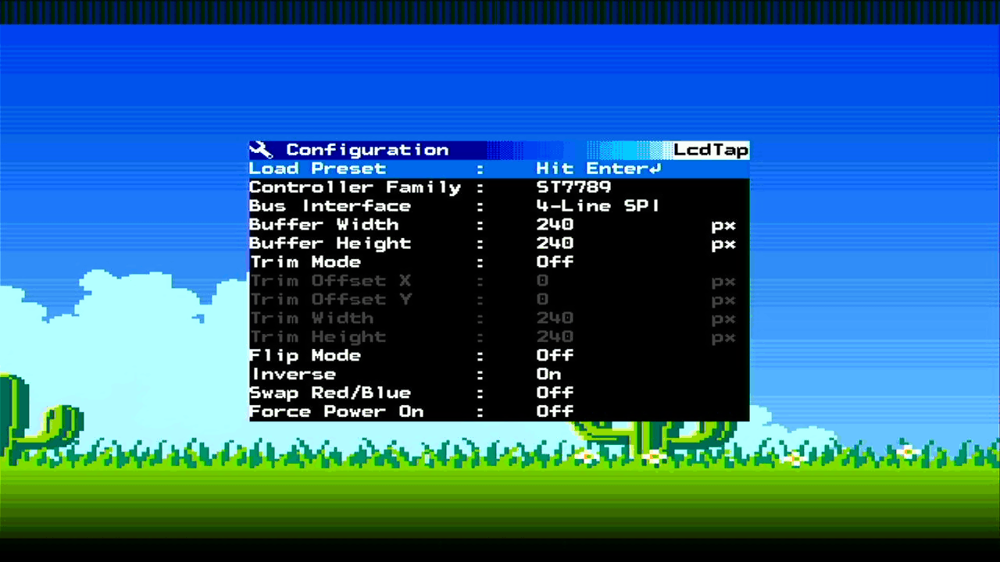
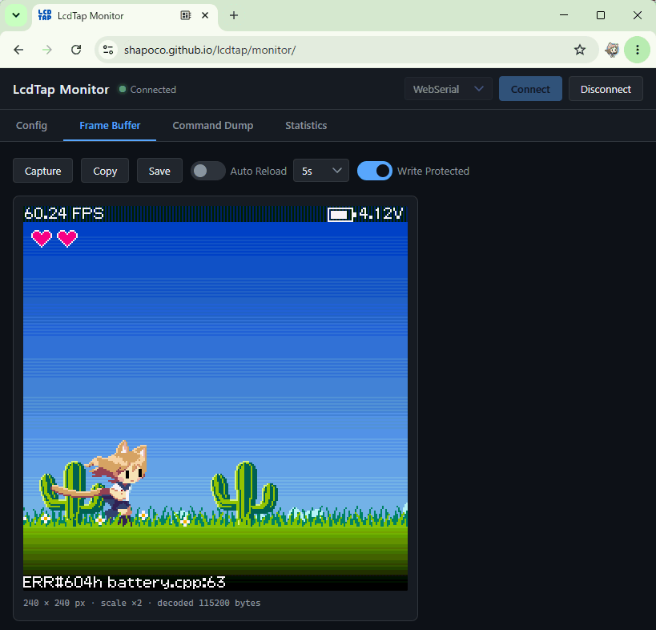
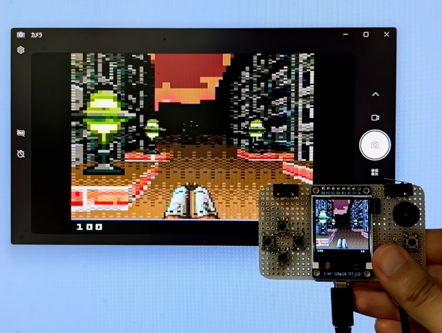
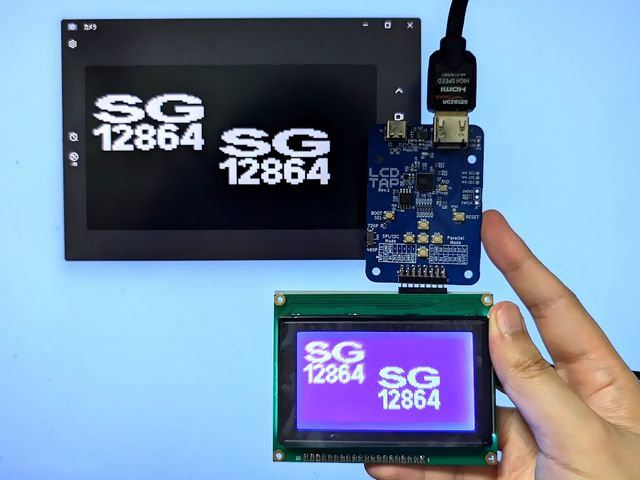
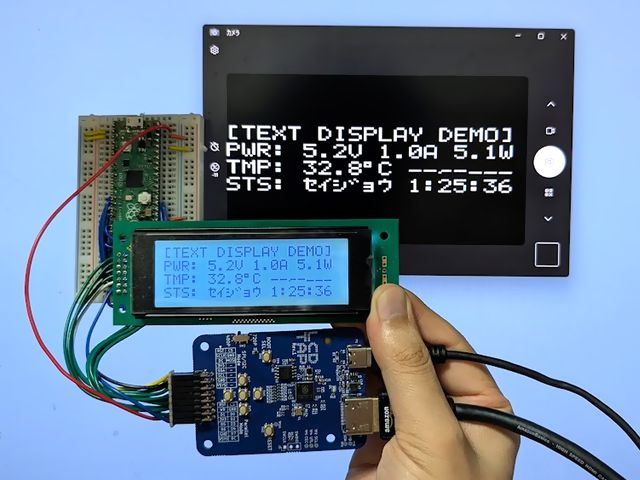
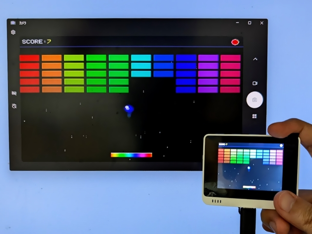

What is LcdTap?
LcdTap is a library that receives SPI/I2C LCD control commands and reconstructs a copy of the display contents into a framebuffer. The framebuffer contents can be output as DVI-D signals or composite video, or captured for use.

You can use it in many ways: play tiny screen games like Arduboy on a large screen, enhance your product appeal at exhibitions and presentations, debug devices, and much more.

Library Features
- Receives LCD controller commands and reconstructs images into the framebuffer
- Programmable screen sizes (up to 480x320 supported on Pico2)
- Command Dump: Captures and displays LCD control commands
- Supported Controllers: ST7735, ST7789, ILI9341, ILI9342, ILI9488, SSD1306, SSD1309, SSD1331, HD44780 (AQM0802, SC1602, SC2004), KS0108 (SG12864), and some variants
- Supported Pixel Formats: Monochrome, RGB111, RGB332, RGB444, RGB565, RGB666
LcdTap-Pico2 Universal
LcdTap-Pico2 Universal is an LcdTap application for Raspberry Pi Pico 2.

Features
- DVI-D Video Output (640x480@60Hz, 1280x720@30Hz)
- Support for SPI, I2C, 8-bit Parallel
- Configuration changes via OSD and 5 buttons
- Configuration changes and still image capture using browser
- Alternative output interfaces (Composite Video, DisplayLink)
Purchase PCB
Pre-assembled PCBs are available for purchase at BOOTH. While sales are primarily intended for Japan, international orders are also possible through Buyee or 萌购任你购.
Schematics
You can also build it yourself using Raspberry Pi Pico 2 and Pico-DVI-Sock. In Japan, Pico-DVI-Sock is available for purchase at Switch Science.

Download Pre-built Firmware
-
Download the zip from the releases
and extract
lcdtap_pico2_universal.uf2. -
Connect Raspberry Pi Pico 2 to your computer while holding the BOOTSEL button, and copy the
extracted
.uf2file to the mounted storage.
OSD Menu
Press the Enter key to open the configuration menu.

USB Serial Interface
Serial Interface is available from LcdTap Monitor.

Alternative Output Interface
LcdTap-Pico2 Universal supports composite video output and DisplayLink output as alternative output interfaces. For more details, see Alternative Output Interface.
Technical Details
Cases
If you try LcdTap, I would be happy if you could tweet your connection and setup details with the #LcdTap tag ;)
-

Arduboy -

ESPboy -

J7-c
(USB Tester) -

KS0108
(SG12864) -

KWS-X1
(USB Tester) -

M5Stack CoreS3 -

PicoPad -

PicoSystem -

Soeks-01M
(GM Counter) -

Text Display -

Thumby -

TinyJoypad -

Wio Terminal
Other Implementations
LcdTap-Pico2W Remote
LcdTap implementation for Raspberry Pi Pico 2 W. Using the same input interface as LcdTap-Pico2 Universal (I2C / 4-wire SPI / 3-wire SPI / 8-bit parallel with identical pin layout), it captures LCD controller traffic and reads the screen without video output via WiFi. See example/pico2w_remote.
LcdTap-Tab5
LcdTap implementation for M5Stack Tab5. See example/m5tab5.
Recommended Header Pinout / Cable Color


| Pin | Parallel Mode | SPI Mode | I2C Mode | Recommended Color |
|---|---|---|---|---|
| 1 | RST | RST | Violet or Brown | |
| 2 | CS | CS | Yellow | |
| 3 | WEN | SCLK | White | |
| 4 | GND | GND | Black | |
| 5 | D1 | DC | Blue | |
| 6 | D0 | MOSI | Green | |
| 7 | 3V3 | 3V3 | 3V3 | Red |
| 8 | D2 | |||
| 9 | D5 | SDA | Green | |
| 10 | D3 | |||
| 11 | D6 | SCL | White | |
| 12 | D4 | |||
| 13 | GND | GND | Black | |
| 14 | D7 | |||
| 15 | VSYS | VSYS | Orange | |
| 16 | DC |